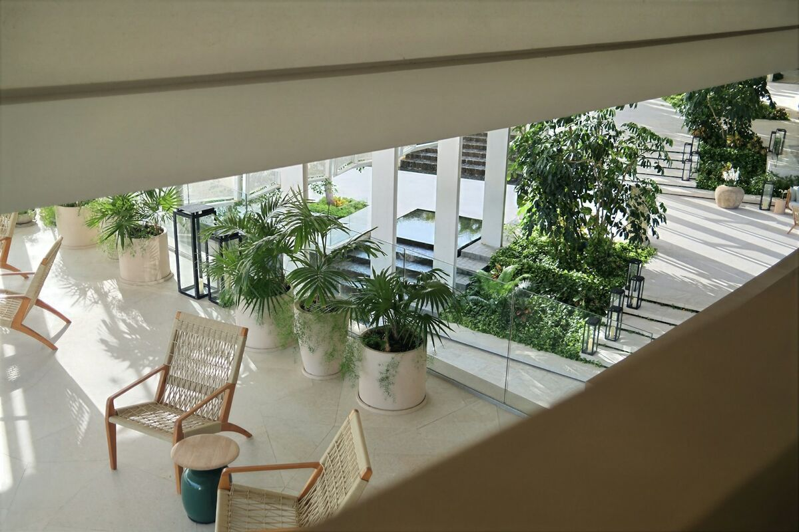

Bureaux d'Euronantes, restaurants du Bouffay, showrooms de Saint-Herblain : Verdalys qualifie votre projet de mur végétal puis le transmet à un installateur partenaire qui couvre la Loire-Atlantique et vous rappelle sous 24 h ouvrées.
Par Sébastien Monnier, fondateur de Verdalys · Mis à jour le

Nantes cultive une image de ville verte — elle a été Capitale verte de l'Europe en 2013 — et ses entreprises, ses restaurants et ses commerces prolongent volontiers cette identité à l'intérieur de leurs locaux.
Autour de la gare, Euronantes accueille des immeubles de bureaux récents ; l'île de Nantes mêle sièges, agences créatives et lieux culturels. Halls, salles de réunion et espaces de coworking s'y équipent volontiers d'un mur végétal en bureaux, souvent en stabilisé sur des plateaux loués.
Restaurants du Bouffay, brasseries de Graslin, commerces du quartier Decré et du passage Pommeraye : un mur végétal derrière un comptoir ou en fond de salle crée une identité immédiate. Voir notre page hôtels & restaurants.
Saint-Herblain, Carquefou, Orvault ou Rezé concentrent zones d'activités, showrooms et commerces spécialisés. Un mur végétal y habille un accueil client ou un espace d'exposition, sans travaux de plomberie. Voir notre page commerces & boutiques.
Doux et humide, le climat nantais épargne les murs extérieurs des grands gels, mais l'humidité et le faible ensoleillement d'hiver orientent le choix du système.
Halls, salles de réunion, boutiques : le stabilisé ne demande ni arrosage ni lumière. Il convient à la plupart des locaux nantais, à condition d'éviter les pièces humides et le soleil direct derrière une baie.
Un hall vitré ou un atrium bien éclairé peut accueillir un mur naturel vivant avec irrigation automatique, en contrepartie d'un contrat d'entretien de 80 à 200 € HT par m² et par an.
Les gels sévères sont rares et la pluie régulière soulage l'arrosage : un mur végétal extérieur à plantes rustiques — fougères, heuchères, carex — s'y développe bien, à condition d'un drainage soigné.
Sur une terrasse de restaurant exposée ou une façade difficile d'accès, un feuillage artificiel traité anti-UV supprime l'arrosage et l'entretien, au prix d'un rendu moins naturel de près.
Rien de spécifique à la Loire-Atlantique dans les tarifs : ce sont la technologie, la surface et l'accès au chantier qui font le prix.
| Type de mur végétal | Usage typique à Nantes | Prix indicatif HT posé |
|---|---|---|
| Panneau stabilisé standard | Salle de réunion, comptoir de boutique | 400 – 650 €/m² |
| Composition stabilisée haut de gamme | Hall de siège à Euronantes | 650 – 900 €/m² |
| Mur vivant intérieur ou extérieur, hors irrigation | Atrium, cour, façade abritée | 600 – 1 200 €/m² |
| Artificiel traité contre les UV | Terrasse de restaurant exposée | 150 – 400 €/m² |
Aucun frais, aucune obligation : un seul professionnel reçoit votre demande.
Commune, type de local, intérieur ou extérieur, surface et échéance.
Sous 24 h ouvrées, pour cerner la technologie et les contraintes de votre local.
Planifiée en horaires décalés si votre établissement reste ouvert au public.
Nantes Métropole et toute la Loire-Atlantique (44), jusqu'à la côte.
Centre, Bouffay, Graslin, île de Nantes, Euronantes, Chantenay, Doulon et les quartiers nord.
Saint-Herblain, Rezé, Orvault, Saint-Sébastien-sur-Loire, Carquefou, Vertou et Bouguenais.
Saint-Nazaire, la côte et le vignoble nantais : précisez votre commune lors de la demande.
À Nantes comme ailleurs, Verdalys n'installe rien lui-même. Un installateur partenaire indépendant couvrant l'Ouest prend en charge l'étude, la pose et l'éventuel entretien ; vous n'avez affaire qu'à lui.
Décrivez le lieu en deux minutes : un installateur partenaire vous rappelle sous 24 h ouvrées, sans engagement.
Demander mon devis gratuitNous intervenons aussi dans les autres grandes villes de France, chacune avec sa page dédiée.